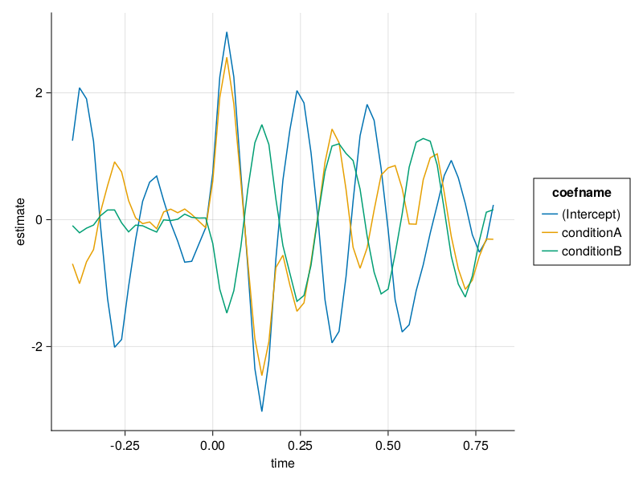

Mass Univariate Linear Models (no overlap correction)
In this notebook we will fit regression models to (simulated) EEG data. We will see that we need some type of overlap correction, as the events are close in time to each other, so that the respective brain responses overlap. If you want more detailed introduction to this topic check out our paper.
Installation
See the installation instructions.
Setting up & loading the data
using StatsModels, MixedModels, DataFrames
import DSP.conv
using Unfold
using UnfoldMakie,CairoMakie
using DataFrames
include(joinpath(dirname(pathof(Unfold)), "../test/test_utilities.jl") ) # to load dataLoad Data
data, evts = loadtestdata("testCase2",dataPath="../../../test/data/");Inspection
The data has little noise and the underlying signal is a pos-neg spike pattern
times = range(1/50,length=200,step=1/50)
plot(times,data[1:200])
vlines!(current_axis(),evts[evts.latency.<=200,:latency]./50) # show events, latency in samples!MakieCore.Combined{Makie.vlines, Tuple{Vector{Float64}}}To inspect the event dataframe we use
show(first(evts,6,),allcols=true)6×5 DataFrame
Row │ latency type intercept conditionA conditionB
│ Int64 String15 Int64 Int64 Int64
─────┼───────────────────────────────────────────────────────
1 │ 20 stimulus2 1 1 0
2 │ 40 stimulus2 1 1 1
3 │ 69 stimulus2 1 1 0
4 │ 90 stimulus2 1 0 1
5 │ 109 stimulus2 1 1 0
6 │ 128 stimulus2 1 0 1Every row is an event. Note that :latency is commonly the timestamp in samples, whereas :onset would typically refer to seconds.
Traditional Mass Univariate Analysis
For a mass univariate analysis, will
- epoch the data
- specify a formula
- fit a linear model to each time point & channel
- visualize the results.
1. Epoch the data
We have to cut the data into small regular trials.
# we have multi channel support
data_r = reshape(data,(1,:))
# cut the data into epochs
data_epochs,times = Unfold.epoch(data=data_r,tbl=evts,τ=(-0.4,0.8),sfreq=50);
size(data_epochs)(1, 61, 299)τ specifies the epoch size. To convert τ to samples, we need to specify the sampling rate.
typeof(data_epochs)Array{Union{Missing, Float64}, 3}In julia, `missing` is supported throughout the ecosystem. Thus, we can have partial trials and they will be incorporated / ignored at the respective functions.2. Specify a formula
We define a formula that we want to apply to each point in time
f = @formula 0~1+conditionA+conditionB # 0 as a dummy, we will combine wit data later3. fit a linear model to each time-point & channel
We fit the UnfoldLinearModel.
m = fit(UnfoldModel,f,evts,data_epochs,times);Alternatively, we could also call it using:
m = fit(UnfoldModel,Dict(Any=>(f,times)),evts,data_epochs);Which (will soon) allow for fitting multiple events at the same time
We can inspect the object
mUnfold-Type: UnfoldLinearModel
formula: Dict{DataType, Tuple{StatsModels.FormulaTerm{StatsModels.ConstantTerm{Int64}, Tuple{StatsModels.ConstantTerm{Int64}, StatsModels.Term, StatsModels.Term}}, StepRangeLen{Float64, Base.TwicePrecision{Float64}, Base.TwicePrecision{Float64}, Int64}}}(Any => (0 ~ 1 + conditionA + conditionB, -0.4:0.02:0.8))
Useful functions:
design(uf) (returns Dict of event => (formula,times/basis))
designmatrix(uf) (returns DesignMatrix with events)
modelfit(uf) (returns modelfit object)
coeftable(uf) (returns tidy result dataframe)
And see that there are several helpful functions to recover design, designmatrix, raw-modelfit and most importantly, coeftable.
There are of course further methods, e.g. `coef`, `ranef`, `Unfold.formula`, `modelmatrix` which might be helpful at some point, but not important nowUsing coeftable, we can get a tidy-dataframe, very useful for your further analysis.
first(coeftable(m),6)| Row | basisname | channel | coefname | estimate | group | stderror | time |
|---|---|---|---|---|---|---|---|
| String | Int64 | String | Float64 | Nothing | Nothing | Float64 | |
| 1 | event: Any | 1 | (Intercept) | 1.24531 | -0.4 | ||
| 2 | event: Any | 1 | (Intercept) | 2.08041 | -0.38 | ||
| 3 | event: Any | 1 | (Intercept) | 1.90501 | -0.36 | ||
| 4 | event: Any | 1 | (Intercept) | 1.23681 | -0.34 | ||
| 5 | event: Any | 1 | (Intercept) | -0.104443 | -0.32 | ||
| 6 | event: Any | 1 | (Intercept) | -1.24538 | -0.3 |
4. Visualize the results
Tidy-Dataframes make them easy to visualize using e.g. AlgebraOfGraphics.jl. We simpliefied this even more, by implementing a wrapper in UnfoldMakie
results = coeftable(m)
plot_erp(results)
As you can see here, a lot is going on, even in the baseline-period! This is because the signal was simulated with overlapping events. Head over to the next tutorial to find out how to remedy this.